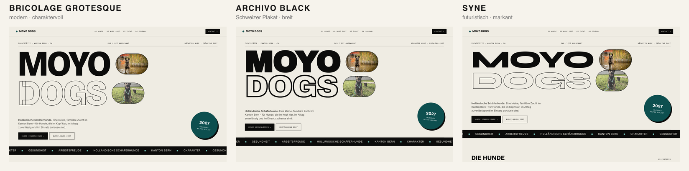

Konzept 01
Wild Editorial
Dunkel, filmisch, Gold, große Serif-Typografie.
Konzept 02
Alpine Light
Hell, warm, Bento-Grid, Schweizer Editorial.
Konzept 03c · Petrol & Kupfer
Neo Poster · Petrol
Plakat-Look, Petrol & Kupfer, Bricolage Grotesque.

Detail
Schriftvergleich
Bricolage · Archivo Black · Syne im direkten Vergleich.
Hero-Variante A
Rechteck im Wort
Zwei stehende Bildkacheln direkt in der Wortmarke.
Hero-Variante B
Bildband
Reine Typo, darunter ein breites Bildband mit Beschriftung.
Hero-Variante C